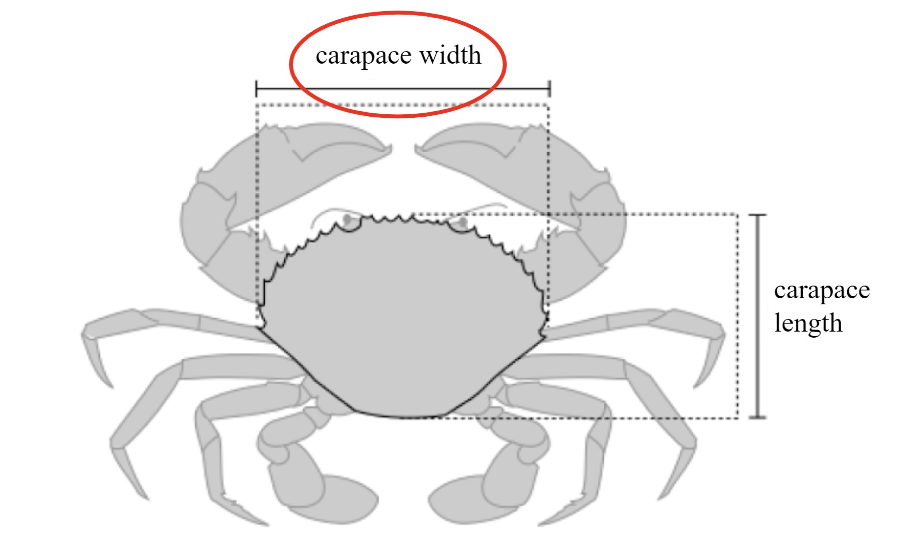

Buong Gabay
Patnubay Sa Pagkolekta Ng Data Ng Pangisdaan
Isang gabay para sa pangangasiwa ng mga survey upang makakuha ng data ng pangisdaan
Panimula
Ang dokumentong ito ay nagbibigay ng patnubay at mga rekomendasyon para sa pangangasiwa ng tatlong instrumento sa pagsisiyasat upang makuha ang impormasyon tungkol sa mga komunidad ng pangingisda at ang mga pangingisda na kanilang pinagkakatiwalaan (hulagway 1). Ang mga survey ay idinisenyo upang ihanay ang nilalaman sa kung paano gagamitin ang data at inaasahang dalas ng pagbabago. Ang pinakamataas na antas ng survey, ang pag-profile ng komunidad, ay naglalaman ng mga katanungan na makakatulong upang makabuo ng isang mas mahusay na pag-unawa sa aktibidad ng pangingisda sa komunidad at mga kondisyon sa sosyoekonomiko. Ang pag-unawa sa socioeconomic landscape ay lalong mahalaga kapag ang trabaho ay unang nagsisimula sa isang komunidad. Ang impormasyong nakolekta sa panahon ng survey na ito ay mahalaga para sa pagdidisenyo ng mga diskarte sa pakikipag-ugnayan sa komunidad at mga plano sa pag-sample ng data. Ang mga landings Profiling at Monitoring survey ay nangongolekta ng data sa catch na nakalapag ng mga pangisdaan. Ang data ng pag-profile ng Mga Landing ay hindi gaanong madalas na kinokolekta at kinukuha ang impormasyon tungkol sa tirahan ng pangingisda, uri ng gear, pagsisikap, at haba ng mga indibidwal na isda. Ang Landings Monitoring survey, na may perpektong isinasagawa araw-araw, ay isang mabilis na survey ng pangisdaan na nangongolekta ng minimum na halaga ng impormasyon na kinakailangan upang subaybayan ang dami ng catch at mga pagbabago sa halaga, tulad ng mga species, timbang, bilang at presyo.

Larawan 1: Timeline para sa pangangasiwa ng tatlong magkakaibang mga instrumento sa survey sa isang sukat ng isang taon.
Mga Detalye Ng Survey
Surbey Sa Pag-Profile Ng Komunidad
Layunin
Unawain ang pangkalahatang tanawin ng komunidad at ang mga pangisdaan na tumatakbo sa loob ng komunidad.
Nakolekta Ang Data
Bilang ng mga miyembro ng komunidad, mangingisda, mangangalakal ng isda, kababaihan
Pangkalahatang tanawin ng mga pangingisda na nagpapatakbo sa loob ng komunidad
Ginamit ang mga Gears; target na species; tirahan fished; panahon; mga sisidlan
Impormasyon tungkol sa pagsisikap at gastos sa pangingisda
Mga pananaw sa mga pangisdaan at mga kondisyon ng tirahan, pagbabanta
Impormasyon sa kasalukuyang pamamahala/regulasyon ng pangisdaan
Pagkilala (sa pamamagitan ng pagmamapa) ng mahahalagang lugar ng pangingisda, tirahan, mga landing site
Target Na Madla
10-20 pangunahing impormante sa loob ng komunidad, katulad ng mga lider ng komunidad, iginagalang na mangingisda, mangangalakal ng isda, at kababaihan.
Dalas at tiyempo
Kapag nagsimula ang trabaho sa isang bagong komunidad ng pangingisda, Ang pagsasagawa ng survey sa pag-profile ng komunidad at ang paunang pagsasanay sa pag-profile ay nagbibigay ng baseline na data at may kaugnayan na impormasyon upang mag-disenyo ng mga pagsisikap sa pag-iingat at pamamahala na pinakaangkop para sa komunidad. Ang pag-uulit ng survey sa pag-profile ng komunidad ay maaaring makatulong na idokumento ang mga makabuluhang pagbabago na nagaganap sa paglipas ng panahon.
Pamamaraan
Ang impormasyon ay maaaring mangolekta sa pamamagitan ng mga survey ng third-party (i.e., census, fisheries department records, atbp.), Mga focus group na binubuo ng 10-20 pangunahing miyembro ng komunidad o mga pangunahing tagapagbigay-alam. Ang mga pinuno ng komunidad pati na rin ang iba ’ t ibang mga may kaalaman at magkakaibang mga mangingisda at mangangalakal ng isda (kabilang ang mga kababaihan at kabataan) ay magiging perpektong mga kalahok na isama sa pangkat ng pokus. Sa pagpapadali ng mga focus group, inirerekomenda na magkaroon, sa pinakamaliit, ng isang facilitator at isang note-taker. Sa focus group, inirerekomenda din na ang mga kalahok ay magbigay ng listahan ng/impormasyon sa pakikipag-ugnay para sa mga mangingisda sa komunidad na maaaring makipag-ugnay upang pamahalaan ang mga survey sa sambahayan. Kung hindi posible na isagawa ang Community Profiling Survey sa isang format ng focus group, ang isang alternatibo ay ang pagbibigay ng parehong mga katanungan tulad ng mga indibidwal na survey na may mga pangunahing tagapagbigay-alam at pag-pool ng mga tugon. Ang mga tanong na kasama sa community profiling survey at mga rekomendasyon para sa pagsasagawa ng mga talakayan ng focus group ay matatagpuan sa Appendix A sa ibaba.
Pagsisiyasat Sa Pagsubaybay Sa Landings
Layunin
Kunin ang pangunahing data na kinakailangan upang makalkula ang mga simpleng tagapagpahiwatig na nakabatay sa Haba ng kalusugan ng palaisdaan at upang subaybayan ang mga pagbabago sa produksyon, halaga, at komposisyon ng pangisdaan.
Nakolekta Ang Data
Nakarating ang petsa
Lokasyon ng Landing
Pangalan ng negosyante ng isda
Pangalan ng Fisher
Pangingisda pagsisikap (araw pangingisda / gleaning)
Pagkakakilanlan ng Species (lokal, karaniwan, pang-agham na pangalan)
Kabuuang bilang
Kabuuang timbang
Kabuuang presyo
Dahilan kabuuang catch hindi ibinebenta, kung naaangkop
Target Na Madla
Mga mangingisda habang nilalapag nila ang kanilang catch o sa bahay/palengke ng mga mamimili ng isda.
Dalas at tiyempo
Ang survey sa pagsubaybay sa Landings ay dapat isagawa araw-araw o nang madalas hangga ’ t maaari. Magsagawa ng mga survey sa pagsubaybay sa Landings bago at pagkatapos ng pagpapatupad upang suriin ang mga epekto ng pagsasara ng pangisdaan o iba pang mga diskarte sa pamamahala. Inirerekumenda namin ang pagkolekta ng data 30 araw bago at pagkatapos ng pansamantalang mga panahon ng pagsasara. Para sa unang pitong araw ng mga panahon ng sampling, inirerekumenda namin na ang mga Enumerator ay nagsasagawa ng mga survey sa pagsubaybay sa Landings araw-araw. Kung maaari, ipagpatuloy ang pang-araw-araw na pagsubaybay sa buong 30-araw na panahon. Kung hindi ito posible, survey ng hindi bababa sa 80% ng mga araw sa loob ng bawat 30 araw. Inirerekumenda rin namin ang pag-survey ng 80% o higit pa sa lahat ng mga Fishers landing catch sa isang partikular na araw pre o post-closure. Ipamahagi ang mga pagsisikap sa survey ng kinatawan sa pagitan ng mga mangingisda ng bangka at mga mangingisda na hindi bangka. Kolektahin ang data mula sa lahat ng mga mangingisda landing sa village, hindi alintana kung o hindi sila ay pangingisda sa loob ng pagsasara ng site.
Para sa mas matagal na pagsasara, tiyakin na ang data ay nakolekta sa parehong buwan para sa bawat taon upang makuha ang pagbabago sa panahon ng pagsasara. Kung hindi iyon magagawa, inirerekumenda namin ang pangangalap ng data sa parehong buwan bago at pagkatapos ng pagsasara. Tulad ng nakasaad sa itaas, inirerekumenda namin ang pagsuri ng hindi bababa sa 80% ng araw sa loob ng buwan at 80% ng mga fishers landing catch sa bawat araw.
Pamamaraan
Gamit ang form na Kobo, matugunan ang mga mangingisda sa mga landing site/bahay ng mga mamimili upang maitala ang kanilang catch.
Survey Sa Pag-Profile Ng Landings
Layunin
Unawain ang sinusunod na mga trend ng catch.
Nakolekta Ang Data
Nakarating ang petsa
Lokasyon ng Landing
Pangunahing lugar ng pangingisda
Pangalan ng negosyante ng isda
Pangalan ng Fisher
Pangingisda pagsisikap (oras at araw pangingisda/gleaning)
Uri ng barko (numero ng pagpaparehistro ng bangka, numero ng crew)
Pagkakakilanlan ng Species (lokal, karaniwan, pang-agham na pangalan)
Ginamit ang mga Gears
Ang Habitat fished
Kabuuang bilang
Kabuuang timbang
Kabuuang presyo
Dahilan kabuuang catch hindi ibinebenta, kung naaangkop
Mga sample ng mga indibidwal na timbang at haba (figure 2-8)
Ang data ng sample na partikular sa kasosyo (sex, kalidad ng catch, gonads, stylet, # traps, atbp.)
Target Na Madla
Isang kinatawan na sample ng catch sa loob ng komunidad. Mag-Record ng hindi bababa sa 50 mga sample (perpektong 100) para sa bawat target na species, na kumakatawan sa iba ’ t ibang mga uri ng gear at mga profile ng fisher.
Dalas at tiyempo
Ang survey na ito ay dapat na isagawa sa simula ng paglahok sa isang komunidad at pagkatapos ay isagawa bawat isa hanggang dalawang taon, bago at pagkatapos ipatupad ang diskarte sa pamamahala, o kung kinakailangan upang ipaliwanag ang mga pagtanggi na sinusunod sa pamamagitan ng data ng pagsubaybay. Gamit ang form na Kobo, matugunan ang mga mangingisda sa mga landing site upang mai-sample ang kanilang catch at maitala ang kanilang aktibidad sa pangingisda.
Pamamaraan
Gamit ang form na Kobo, matugunan ang mga mangingisda sa mga landing site upang mai-sample ang kanilang catch at maitala ang kanilang aktibidad sa pangingisda.
Pamantayan sa Pagsukat: Uri ng haba upang masukat ayon sa pangkat ng species

Larawan 2: Ang kabuuang haba ay dapat gamitin upang masukat ang finfish, shark at eels (AFS).

Larawan 3: Ang lapad ng disc ay dapat gamitin upang masukat ang mga sinag at skate.

Larawan 4: Ang lapad ng Carapace ay dapat gamitin kapag sinusukat ang alimango (Suryandari et. al, 2018).

Larawan 5: Ang haba ng Mantle ay dapat gamitin kapag sinusukat ang pugita at pusit (FAO).

Larawan 6: Ang haba ng Carapace ay dapat gamitin kapag sinusukat ang hipon at lobster (Hart et al. 2001).

Larawan 7: Ang haba ay dapat gamitin kapag sinusukat ang mga bivalves at gastropods.

Larawan 8: Ang kabuuang haba ay dapat gamitin kapag sinusukat ang mga pipino sa dagat. Ang lapad o diameter ng pagsubok ay dapat gamitin kapag sumusukat sa mga sea urchin.
Pangkalahatang-Ideya Ng Daloy Ng Data
Ang pagkolekta ng Data, pagpapatunay, pagbabagong-anyo, at paggunita ay ang apat na pangunahing sangkap ng data system. Ang pangunahing mga application ng software na ginamit ay KoboToolBox, Smartsheet, PostgreSQL, at R.
Ang KoboToolBox ay isang libre at open-source na software na isang malakas na toolkit para sa pagkolekta ng data na naa-access sa pamamagitan ng mapaghamong mga kapaligiran at maraming mga platform, tulad ng mga mobile device, computer, at papel. Kinokolekta ng mga Enumerator ang data sa mga kondisyon ng socioeconomic at ecological na mahalaga upang masuri ang mga komunidad ng pangisdaan at katayuan sa pamamagitan ng mga talatanungan sa survey ng KoBoToolbox. Ang Smartsheet ay isang collaborative work management platform na nagbibigay ng flexible at intuitive na interface para sa mga organisasyon na magplano, subaybayan, i-automate, at pamahalaan ang iba ’ t ibang proyekto at proseso sa real-time. Ang mga file ng sanggunian na ginagamit upang punan ang mga form ng survey at ikonekta ang karagdagang data sa mga master dataset ay pinamamahalaan sa Smartsheet. Bilang karagdagan, ang data ay napatunayan sa Smartsheet. Ang PostgreSQL ay isang libreng at open-source na sistema ng pamamahala ng database na ginagamit bilang isang bodega ng data para sa maraming mga Web, analytics, at geospatial na aplikasyon habang nag-iimbak ng hindi nakabalangkas at nakabalangkas na data sa isang solong produkto. R ay isang libre at open-source na kapaligiran ng software at programming language na malawakang ginagamit para sa data science, statistical computing, at visualization ng data. Ang mga dashboard ng Data ay binuo gamit ang makintab na pakete mula sa R programming language at naka-host sa shinyapps.io, isang platform bilang isang serbisyo (paas) para sa pagho-host ng Shiny web apps (applications).

Larawan 9: diagram ng daloy ng data.
Ang pagkolekta ng data ay nagsasangkot ng sistematikong pagkolekta at pagsukat ng impormasyon mula sa mga kaugnay na mapagkukunan sa mga variable ng interes para sa paggawa ng desisyon, estratehikong pagpaplano, mga pagsusuri sa kinalabasan, at iba pang mga layunin. Sa pamamagitan ng pagsasama ng dami at husay na data sa mga talatanungan sa survey, nagkakaroon tayo ng mas malalim na pag-unawa sa sosyo-ekonomiko at ekolohikal na mga kondisyon na nauugnay sa mga pamayanan ng pangingisda at mga diskarte sa pamamahala ng adaptive. Ang pagpapatunay ng Data ay tumutukoy sa paglalapat ng mga pamamaraan upang masukat ang mga kundisyon ng nakolektang data at matukoy kung natutugunan ng nakolektang data ang tinukoy na pamantayan sa kalidad, tulad ng kawastuhan, pagkakapare-pareho, kaugnayan, pagkakumpleto, at pagiging natatangi. Ang pagbabagong-anyo ng Data ay nagko-convert, naglilinis, at nagtatayo ng hilaw na data sa isang magagamit na format na maaaring masuri at masuri para sa paggawa ng desisyon. Ang pagsusuri at pagtingin sa Data ay nagsasangkot ng pagdidisenyo at paglikha ng mga naa-access na graphics o visual na pagpapakita ng impormasyon upang epektibong maipahayag ang kumplikadong kwalitatibong at pang-kuantitatibong data na dati nang nakolekta, na-verify, at binago sa mga target na madla. Inilarawan namin ang proseso ng daloy ng data sa ibaba:
Ang Data ay nakolekta sa pamamagitan ng mga form ng survey ng KoboToolBox.
Ang Data ay nakuha sa database.
Kung pinili ng enumerator ang mga pre-populated na pagpipilian ng sagot sa mga survey, ang data ay hindi kailangang mapatunayan at maaaring direktang dumaan sa proseso ng pagsusuri ng data at paggunita.
Kung ang Enumerator ay manu-manong naglalagay ng data tulad ng isang bagong mangingisda, mamimili, kolektor ng data, landing site, o species, ang data ay napapatunayan sa Smartsheet bago isama sa huling talahanayan ng data at makita sa dashboard. Field team leads ay aabisuhan sa pamamagitan ng email kapag ang data ay handa na para sa pagpapatunay. Manu-manong susuriin ng Team leads ang mga talahanayan ng kontrol sa kalidad upang kumpirmahin na ang bagong idinagdag na impormasyon ay may bisa.
Pagkatapos ng pagpapatunay, ang bagong data ay itinulak sa parehong mga file ng sanggunian at bumalik sa database para sa pangwakas na pagbabagong-anyo bago ang pagsusuri at paggunita.
Kapag ang data ay itinulak sa mga file ng sanggunian, ang mga lead ng koponan ay aabisuhan sa pamamagitan ng email kung ang anumang karagdagang impormasyon ay kinakailangan sa mga file ng sanggunian.
Ang mga na-update na mga file ng sanggunian ay pagkatapos ay na-upload sa platform ng KoboToolBox para isama sa mga form.
Ang na-update na data mula sa mga file ng sanggunian ay ginagamit din sa proseso ng pagbabagong-anyo ng data upang sumali sa mga karagdagang patlang ng data tulad ng mga coordinate at kasarian.
Ang pangwakas na mga hakbang ng proseso ng pagbabagong-anyo ng data ay nagreresulta sa mga talahanayan ng data ng master na ginagamit para sa pagsusuri ng data at paggunita sa mga dashboard ng data.
Ang mga dashboard ng Data (ibig sabihin, makintab na apps) ay kumonekta nang direkta sa database, hinila ang pinaka-up-to-date na data na magagamit, sa gayon ay nagbibigay ng mga kasosyo na malapit sa agarang pag-access sa raw at summarized data.
Seguridad Ng Data
Nasa ibaba ang isang listahan ng mga platform ng software kung saan ang data ay maaaring maiimbak at ilipat sa transit mula sa database. Ang impormasyon sa seguridad ng Data para sa bawat panlabas na platform ay magagamit sa website na tukoy sa platform na naka-link dito.
Ipinatupad ang mga karagdagang pamamaraan sa seguridad, bilang karagdagan sa mga hakbang sa seguridad ng data na ibinigay ng mga platform ng software sa itaas. Lahat ng account sa lahat ng software platform na ginamit ay protektado ng password.
Ginagamit namin ang Github bilang aming bersyon control system para sa mga naka-code na produkto. Bilang default, ang lahat ng mga folder at proyekto na may data ng pangisdaan at socioeconomic ay pribado at naa-access lamang sa mga kawani at kontratista.
Makintab na Apps), Kinakailangan ang pagpapatunay ng gumagamit para sa pagtingin o pag-download ng data, depende sa kasunduan sa pagbabahagi ng data na pinili ng bawat samahan ng kasosyo. Kabilang dito ang pag-verify ng mga gumagamit bago payagan ang data na makita o ma-download, mga gumagamit na nag-log in sa mga platform ng pagtingin sa data, at regular na pamamahala ng mga na-verify na gumagamit.
Ang pag-Access sa mga dokumento ng Smartsheet (hal.mga file ng sanggunian, mga sheet ng Pagpapatunay ng data) ay limitado sa mga tauhan na nakilala ng bawat organisasyon, at ang bawat kasosyo ay maaaring tingnan lamang ang kanilang sariling impormasyon na partikular sa kasosyo. Ang mga eksepsiyon dito ay kinabibilangan ng mga kawani na kumokontrol at tumutulong sa mga daloy ng trabaho sa kalidad ng data, at mga kawani ng Blue Ventures na tumutulong sa mga kasosyo sa mga daloy ng trabaho sa impormasyon sa Smartsheet.
Pagkapribado Ng Data
Ang personal identifiable information (PII) at fisheries catch data ay pag-aari ng mga mangingisda at mamimili ng isda at hindi kailanman ibabahagi nang walang paunang pahintulot. Upang maprotektahan ang privacy ng fisher, mga mamimili, at mga kolektor ng data, ang lahat ng mga pangalan ay hindi nagpapakilala sa mga random na numero ng pagkakakilanlan. Samakatuwid, ang lahat ng bahagyang o ganap na magagamit na data sa publiko ay isasama lamang ang mga random, numerong numero ng id. Tingnan ang seksyon sa pagbabahagi ng data para sa isang buong paliwanag ng mga kasunduan sa pagbabahagi ng data.
Ang Data na itinuturing na PII ay kinabibilangan ng:
Mga pangalan ng mga mangingisda, mamimili, at mga kolektor ng data
Mga pangalan ng mga sumasagot para sa anumang mga survey
Pagbabahagi Ng Data
Ang fisheries data system ay idinisenyo upang i-streamline ang paggamit ng iyong data at magbigay ng isang platform para sa iyong aktibong pakikipag-ugnayan sa mas malawak na pamamahala ng pangisdaan at mga pagsisikap sa pag-iingat. Ang pinagsama-samang data na nakolekta nang sama-sama sa mga kasosyo ay maaaring magbunga ng malakas na pananaw para sa pagsubaybay sa palaisdaan, pagtatasa ng mga diskarte sa pamamahala, paggabay sa paggawa ng desisyon sa parehong lokal at pambansang antas, pag-unawa sa mga pagbabago sa rehiyon, at pagkilala sa mga potensyal na serbisyo sa pananalapi.
Kinikilala namin ang kritikal na kahalagahan ng pagmamay-ari ng data at paggamit para sa lahat ng nag-aambag na kasosyo. Ang aming layunin ay upang bigyan ka ng kakayahang umangkop sa pamamahala at pagtukoy kung paano ginagamit ang iyong data. Sa pamamagitan ng pagpili ng isa sa tatlong mga antas ng pahintulot sa paggamit ng data, maaari mong ayusin ang lawak kung saan ibinabahagi ang iyong data sa ibang mga gumagamit. Maaari mong maiangkop ang mga antas ng pahintulot batay sa mga uri ng data, at mahalaga, mayroon kang kalayaan upang ayusin ang iyong antas ng pahintulot ng data sa anumang oras. Ang personal identifiable information (PII) at fisheries catch data ay pag-aari ng mga mangingisda at mamimili ng isda at hindi kailanman ibabahagi nang walang paunang pahintulot. Sa pamamagitan ng pagpili ng antas ng pahintulot sa paggamit ng data, kinukumpirma mo na ang mga indibidwal na pahintulot ay nakuha mula sa parehong mga mangingisda at mamimili ng isda.
Ang lahat ng data ay kasalukuyang nakatakda sa antas 1 - pribado. Ang mga gumagamit ay magkakaroon ng pagkakataon na ayusin ang kanilang mga antas ng pahintulot kung kinakailangan.
Antas 1-Pribado
Ang data ay mahigpit para sa panloob na mga layunin ng orihinal na data contributor.
Ang Data ay magagamit para sa pag-download ng orihinal na data contributor.
Ang Data ay hindi isasama sa mga pagsusuri sa rehiyon na ibinigay sa dashboard.
Mahigpit na ipinagbabawal ang hindi awtorisadong pagbabahagi o pamamahagi ng data sa mga panlabas na partido.
Antas 2-Ibahagi sa iba pang mga nag-aambag ng Data
Ang data ng antas ng biyahe ay magagamit para sa iba pang mga nag-aambag ng data upang i-download.
Ang mga buod ng Data at visualization ay magagamit para sa iba pang mga nag-aambag ng data.
Ang Data ay isasama sa mga pagsusuri sa rehiyon sa dashboard.
Antas 3-Ibahagi sa lahat ng mga gumagamit
Trip level data ay magagamit para sa lahat ng mga gumagamit upang i-download.
Ang mga buod ng Data at visualization ay magagamit para sa lahat ng mga gumagamit.
Ang Data ay isasama sa mga pagsusuri sa rehiyon sa dashboard.
Ang orihinal na nag-aambag ng data ay maaaring tukuyin ang anumang mga limitasyon sa paggamit o kundisyon na naaangkop sa lahat ng mga gumagamit.
Pagpapatunay ng bago at naka-flag na Data
Sa mga survey, ang ilang mga katanungan ay nagpapahintulot sa mga Enumerator na magdagdag ng isang bagong mangingisda, mamimili, kolektor ng data, landing site, species, o “iba pa.”Ang impormasyon mula sa mga pagpipiliang ito ay mga bagong puntos ng data at dapat sumailalim sa pag-verify bago itulak sa panghuling dataset, mailarawan sa dashboard, at idinagdag sa mga sanggunian na file. Mayroon ding mga hadlang na itinakda sa timbang, Presyo at haba ng isang species, at kung ang data na nakolekta ay nasa ibaba o sa itaas ng mga hadlang na ito, ang mga halagang ito ay na-flag para sa pagsusuri. Ang mga hadlang sa timbang at presyo ay itinakda ng mga kasosyo sa min_max_ref. Ang mga paghihigpit sa Haba ng mga Species ay itinakda ng team gamit ang mga biological parameter.
Ang lahat ng data na dumadaloy sa sistema ng data ng pangisdaan ay napatunayan sa Smartsheet. Ang alinman sa mga bago o naka-flag na mga entry na ito ay ipinadala sa talahanayan ng pagpapatunay sa Smartsheet para mapatunayan ng mga koponan sa larangan. Ang mga talahanayan ng pagpapatunay ay partikular sa kasosyo at maaaring ma-access sa pamamagitan ng mga kahilingan sa pag-update na ipinadala sa iyong email o sa pamamagitan ng pagbisita sa mga link ng Dynamic View na ibinigay sa iyo. Ang mga lead ng Field team ay aabisuhan sa pamamagitan ng email kapag kailangang ma-validate ang data sa mga talahanayan. Kapag na-verify na ang data sa mga talahanayan ng pagpapatunay, maglalagay kami ng bagong impormasyon sa reference file at magbibigay ng mga kinakailangang pagwawasto sa master dataset.
Ang mga tiyak, sunud-sunod na mga tagubilin para sa kung paano makumpleto ang pagpapatunay ng data sa Smartsheet ay matatagpuan sa pahina ng Pagpapatunay ng data.
Pagkolekta Ng Data
Ang Blue Ventures ay namamahala sa lahat ng mga survey sa pamamagitan ng mga form ng Kobo Toolbox na maibabahagi sa pamamagitan ng isang Kobo Toolbox account. Maaari kang mag-set up ng isang account sa https://kf.kobotoolbox.org/accounts/signup/. mangyaring makipag-ugnay sa koponan gamit ang iyong username at mga detalye ng account. Kapag ibinahagi ang mga survey, i-access ang mga form ng Kobo sa pamamagitan ng kobocollect libreng Android mobile phone app o sa pamamagitan ng form ng web ng Enketo. Ang mga detalyadong tagubilin sa pag-set up ng isang kobo account, pagkolekta ng data, at pagsusumite ng data ay matatagpuan sa pahina ng pag-Setup ng Kobo. Gumamit ng isang QR code upang mai-configure ang lahat ng mga aparato pagkatapos ng manu-manong pag-set up ng unang telepono o tablet upang mag-set up ng maraming mga telepono o tablet sa ilalim ng isang account sa pagkolekta ng data. Ang manu-manong pag-setup ng unang aparato ay nangangailangan ng Kobo server URL, username, at password. Ang KOBO server URL ay https://kc.kobotoolbox.org. ang karagdagang impormasyon sa pag-set up ng koleksyon ng data kasama ang Kobo, kabilang ang kung paano i-configure ang maraming mga aparato sa pagkolekta ng data sa pamamagitan ng isang QR code, ay matatagpuan sa https://support.kobotoolbox.org/.
Kapag na-download mo na ang KoboCollect, buksan ang app at ipasok ang URL ng server, username, at password upang ikonekta ang iyong kobocollect app sa KoBoToolbox server. Ang pagkonekta sa kobocollect app sa KoBoToolbox server ay nagbibigay-daan sa iyo upang mag-download ng mga naka-deploy na form mula sa KoboToolbox sa iyong mobile device at magpadala ng data na nakolekta sa pamamagitan ng app pabalik sa server. Sa home screen, piliin ang ” Kumuha ng blangko na Form.”Ang isang listahan ng lahat ng iyong mga naka-deploy na form ng survey ay dapat lumitaw. Pindutin ang” Piliin ang lahat ” upang maipadala ang lahat ng mga form ng survey sa app, o piliin ang mga nais mong magkaroon sa pamamagitan ng pagpili ng mga ito nang manu-mano. Pagkatapos ay i-click ang “Pumili.”Upang i-deploy ang survey, Piliin ang “Punan ang blangko na Form.”
Habang ang webform ay awtomatikong na-update kapag magagamit ang isang bagong bersyon ng survey, dapat i-configure ng mga gumagamit ang “auto-update” sa kanilang sarili sa app. Ang regular na pag-update ng mga survey sa app ay nagsisiguro gamit ang pinakabagong bersyon ng form at hindi nagiging sanhi ng mga isyu sa pipeline ng data. Maaari kang mag-set up ng auto-update sa app sa pamamagitan ng pagpunta sa “mga setting” at “pamamahala ng Form.”Ang karagdagang impormasyon sa awtomatikong pag-update ng mga survey sa app ay matatagpuan sa pahina ng pag-Setup ng Kobo. Mahalagang tandaan na ang isang koneksyon ay kinakailangan para sa app na hilahin ang pinakabagong bersyon ng survey, kahit na naka-on ang mga setting ng auto-update. Samakatuwid, payuhan ang mga Enumerator na magkaroon ng koneksyon sa internet bago magsagawa ng gawaing bukid upang ang KoboCollect ay maaaring hilahin ang pinakabagong bersyon.
Matapos mangolekta ng data, ang mga survey na isinumite sa pamamagitan ng web form ay Awtomatikong isusumite sa server sa sandaling ang kolektor ng data ay tumama sa pindutan ng “isumite”. Ang data na nakolekta sa pamamagitan ng kobocollect app ay unang nai-save sa app sa isang lugar na may hawak at pagkatapos ay itinulak sa server. Ang mga nakumpletong survey ay mananatiling naka-hold bago isumite sa server upang ang mga kolektor ng data ay maaaring gumawa ng mga pag-edit ng survey pagkatapos ng pagkolekta ng data, o kung walang koneksyon sa internet, Maaaring i-save ng app ang mga survey at pagkatapos ay itulak ang mga survey sa server sa sandaling may koneksyon sa internet. Partikular, kapag kumpleto ang survey, tatama ang gumagamit ng “I-Save ang form at exit,” tinitiyak na ang “Mark form bilang finalized” ay nasuri din. Ang” I-Edit ang naka-save na Form ” ay awtomatikong nag-iimbak ng naka-save na form. Ang kolektor ng data ay maaaring gumawa ng mga kinakailangang pagbabago at piliin ang “I-Save ang Form at Exit.”Ang home screen ay mayroon ding isang pindutan na tinatawag na “magpadala ng Finalized Form.”Pindutin ang Piliin ang lahat (o piliin ang mga nais mong i-upload) at pagkatapos ay pindutin ang “Ipadala ang napili.”Piliin ang” Tingnan ang ipinadala na Form ” upang matiyak na matagumpay na mai-upload ang mga form at dapat mo na ngayong matingnan ang lahat ng mga isinumite na form.
Ang isang sentral na sistema ng imbakan ng data ay naka-link sa data ng Kobo, at ang mga awtomatikong pagsusuri at mga visualization ay magagamit sa pamamagitan ng isang pamantayang dashboard. Ang Raw data ay nai-back up sa database ng KoboToolbox at magagamit sa pamamagitan ng pag-download o direktang link sa isa pang database o bodega ng data.
Mga salin
Ang mga pagsasalin para sa lahat ng mga wika ay nakumpleto sa pamamagitan ng pag-edit ng mga sheet ng pagsasalin sa Smartsheet. Kung nalaman mong ang isang pagsasalin ay nangangailangan ng pag-update o mali sa mga survey, mangyaring direktang i-update ang kaukulang pagsasalin sa naaangkop na sheet ng Smartsheet. Kung kailangan ng team ng mga bagong pagsasalin, makakatanggap ang mga partner ng notification mula sa Smartsheet.
Mga File Ng Sanggunian
Ang mga reference file ay kasosyo o partikular sa bansa at naglalaman ng komprehensibong impormasyon sa mga antas ng administratibo ng mga komunidad ng pangingisda (bansa, lalawigan, distrito, nayon), mga landing site, mangingisda, mamimili, kolektor ng data, data ng species, mga lugar ng pamamahala, mga uri ng tirahan, mga uri ng gear, at mga organisasyon ng pakikipagsosyo. Ang ilang impormasyon ay pumupuno sa mga listahan ng pagbagsak sa mga survey, at ang ilan ay sumali sa master dataset pagkatapos makolekta ang data. Ang bagong impormasyon ay dapat idagdag nang direkta sa mga sheet ng sanggunian.
Ang mga tiyak, sunud-sunod na mga tagubilin para sa kung paano i-update ang mga file ng sanggunian sa Smartsheet ay matatagpuan sa pahina ng mga file ng sanggunian.
Appendix A: Gabay Sa Talakayan Ng Pangkat Ng Pokus
Mahalagang pagsasaalang-alang bago magsagawa ng fisheries profiling o survey
Relasyon at tiwala
Ang pagbuo ng mga relasyon at pagkakaroon ng tiwala mula sa komunidad ay isang mahalagang paunang hakbang bago magtanong tungkol sa impormasyon sa pangisdaan. Ang unang hakbang sa pagbuo ng mga ugnayan at pagkakaroon ng tiwala sa pamayanan ay ang pagpapakilala sa iyong sarili, iyong samahan, at ang layunin ng pagsasagawa ng profiling ng pangisdaan.
Paghahanda
Mahalaga ang paghahanda sa pagsasagawa ng bawat pamamaraan ng survey, dahil ang mahusay na paghahanda ay magbibigay sa iyo ng kumpiyansa sa pagiging epektibo ng bawat pamamaraan na iyong inilalapat.
Oras para sa pagkolekta ng impormasyon
Ayusin ang oras ng pagsasagawa ng bawat pamamaraan sa oras ng prospective na tumutugon o naka-target na pangkat ng komunidad.
Respondent
Ang pag-unawa sa mga potensyal na respondent na matutugunan mo sa panahon ng fisheries profiling ay mahalaga sa pagsasagawa ng mga survey. Ang mga pangkat o indibidwal na nasa survey ay dapat makatanggap ng paunang abiso. Samakatuwid, ang pagpapakilala ng mga maimpluwensyang pinuno ng komunidad ay dapat na bahagi ng gawaing pre-survey.
Logistik
Ang bawat pamamaraan ay may logistic at materyal na pangangailangan. Siguraduhin na ang mga mapagkukunan at kagamitan na kinakailangan para sa bawat pamamaraan ng pag-profile ng pangisdaan ay inihanda.
Listahan ng contact ng pangunahing tao
I-Save ang isang pangunahing listahan ng contact ng tao sa iyong telepono at mayroon ding naka-print na bersyon para sa pag-back up.
Kalusugan at kaligtasan
Tiyaking nasa mabuting kalagayan ka upang magsagawa ng profiling ng pangisdaan. Magdala ng isang mahalagang first aid kit.
Patnubay Sa Talakayan Ng Pangkat Ng Pokus
Ang sumusunod ay naglalaman ng patnubay at mga rekomendasyon sa pagsasagawa ng isang focus group upang makuha ang impormasyon sa pag-profile ng komunidad. Ang pagdaraos ng sesyon ng focus group ay inirerekomenda upang hikayatin ang diyalogo, makuha ang pagkakaiba-iba ng mga opinyon, at simulan ang pagbuo ng mga relasyon sa mga mahahalagang miyembro ng komunidad. Gayunman, sa kaso na ang isang focus group ay hindi posible, ang community profiling survey ay maaaring isagawa bilang mga indibidwal na pakikipanayam sa mga mahalagang stakeholder gamit ang “Community Profiling Survey” Kobo form. Sa pangkalahatan, ang layunin ng pagsasanay sa pag-profile ng komunidad, maging sa isang focus group o indibidwal na format ng pakikipanayam, ay upang maunawaan ang pangkalahatang tanawin ng komunidad at ang mga pangingisda na nagpapatakbo sa loob ng komunidad.
I. Bago magsagawa ng isang focus group
Bago mag-host ng pormal na grupo ng pokus sa pag-profile ng pangingisda, inirerekomenda na magsagawa ng mga di-pormal na pag-uusap at pagmamasid ng kalahok. Ang pamamaraang ito ay nangangahulugan ng paggugol ng oras, pagbuo ng mga relasyon, at pag-unawa sa palaisdaan gamit ang impormal na pag-uusap at pagmamasid ng kalahok.
Ang impormal na pag-uusap ay mahalaga upang mas maunawaan ang pangkalahatang konteksto ng pangisdaan bago magsagawa ng talakayan ng grupo ng pokus. Gamitin ang pamamaraang ito bilang isa sa mga panimulang punto upang mabuo ang nilalaman ng talakayan ng pangkat ng pokus. Papayagan ka ng pamamaraang ito na makilala ang pamayanan ng pangisdaan, upang simulan ang pagbuo ng mga relasyon, at makakuha ng tiwala.
Mga inirekumendang tip upang magsagawa ng impormal na pag-uusap:
Igalang ang mga pagkakaiba sa kultura. Sundin ang mga pamantayan sa lipunan tulad ng mga katanggap-tanggap na pagbati, mga code ng damit, at igalang ang mga kasanayan sa relihiyon. Maging magalang, mapagpakumbaba, at makinig sa mga opinyon ng stakeholder nang hindi nagpapataw ng iyong sarili. Ang pananatili sa loob ng isang pamayanan, pagbuo ng isang ugnayan, at pagbabahagi ng mga pagkain ay makakatulong upang mabuo ang tiwala.
Gumugol ng oras sa mga stakeholder. Walang shortcut sa pagkakaroon ng tiwala at suporta. Lalo na sa loob ng mga pamayanan ay Mabuting makita, gumugol ng oras sa mga nayon at makilala ang mga tao. Maging handa upang talakayin ang mas malawak na mga isyu sa loob ng komunidad. Huwag subukang itulak ang isang partikular na agenda.
Gamitin ang lokal na wika kung maaari, maliban kung ang isang karaniwang wika ay naa-access. Kung hindi, gumamit ng interpreter. Maging maingat sa mga pagkakamali sa pagsasalin. Ang pagsasalin ng cross checking sa pagitan ng higit sa isang interpreter ay maaaring makatulong na mabawasan ang maling interpretasyon.
Huwag gumawa ng mga pangako na hindi matutupad. Maging malinaw sa mga layunin at inaasahang kinalabasan nang hindi nagtataas ng mga inaasahan. Ito ay mahalaga upang bigyang-diin nang maaga upang ang mga komunidad ay magkaroon ng isang malinaw na pag-unawa sa papel na ginagampanan ng kasosyo sa teknikal, ibig sabihin upang mapadali ang pagsasara ng palaisdaan ng pugita, hindi upang maghukay ng mga balon o mag-ayos ng mga paaralan. Mahalagang matiyak na ang lahat ay may kamalayan sa kung ano ang magagawa at hindi magagawa ng samahan sa loob ng komunidad. Ang pagtiyak ng makatotohanang mga inaasahan ay nakakatulong upang mabawasan ang pagkabigo, reklamo, at mga salungatan habang umuusad ang proyekto.
Malawak na makipag-usap sa mga plano at aktibidad. Tiyakin na ang anumang mga pagpupulong o aktibidad ay binalak nang maaga at sa kapwa nakalulugod na mga oras at lokasyon upang ma-maximize ang pagdalo. Tiyaking ang anumang mga pagbabago sa mga plano at aktibidad ay naiparating nang maaga hangga ’ t maaari. Ang pagiging nasa oras at nananatili sa mga kasunduan ay nakakatulong upang mabuo ang tiwala at tiwala sa pagitan ng mga stakeholder.
Palaging kilalanin ang mga stakeholder sa mga output ng proyekto tulad ng mga ulat at paglabas ng media sa loob ng mga pagpupulong ng stakeholder at panlabas na pagtatanghal. Magkaroon ng kamalayan sa ‘pagmamay-ari’ ng impormasyon at igalang ang pagiging kompidensiyal at privacy.
Ang mas mahusay na pag-unawa sa tanawin ng stakeholder sa komunidad ay isang mahalagang layunin sa pagsasagawa ng mga impormal na pag-uusap at pagmamasid ng kalahok. Ang mga stakeholder ay nakakaapekto o maaaring maapektuhan ng mga aksyon ng isang organisasyon. Ang kanilang suporta ay mahalaga para sa tagumpay ng isang organisasyon sa pagpapatupad ng mga plano sa pamamahala ng pangisdaan. Sa pamamagitan ng mas mahusay na pag-unawa sa mga stakeholder, mabisa mong matutukoy ang mga stakeholder na kasangkot sa hinaharap na pagsubaybay sa pangisdaan para sa pamamahala ng pangisdaan sa kanilang lugar.
Mga halimbawa ng mga uri ng mga stakeholder upang isama:
Mga mangingisda
Pinuno ng nayon
Pananampalataya/mga pinuno ng relihiyon
Pangulo ng distrito
Manggagawa sa kalusugan ng komunidad / practitioner sa kalusugan
Mamimili/tagatustos ng nayon
Pagproseso ng halaman
Mga babae sa nayon/asawa ng mga mangingisda
Impormasyon na makokolekta tungkol sa mga stakeholder:
- Ang impormasyon tungkol sa mga pangunahing stakeholder at ang kanilang mga posisyon na may kaugnayan sa mga layunin ng isang entidad (degree ng suporta, kapangyarihan, atbp.)). Ang impormasyong ito ay maaaring gamitin upang makilala kung aling mga stakeholder ang isasama sa Community profiling focus group.
Matapos magsagawa ng impormal na pag-uusap, ang susunod na hakbang na maaari mong gawin ay ang pagmamasid ng kalahok. Ang pagmamasid ay isang pamamaraan na nagbibigay-daan sa iyo upang magamit ang mga kaganapan sa paligid mo upang makalikom ng mga pahiwatig at makabuo ng mga konklusyon tungkol sa mga tukoy na lokal o karanasan sa pamamagitan ng pagmamasid sa isang araw sa nayon ng pangingisda. Ang pamamaraang ito ay kinakailangan upang mangalap ng katibayan mula sa impormasyong ibinigay sa impormal na pag-uusap. Pinapayagan ka ng pamamaraang ito na maunawaan ang pang-araw-araw na mga aktibidad sa buhay ng nayon ng pangingisda.
II. Mga Pamamaraan Ng Pangkat Ng Pokus
A. Pag-aayos ng pangkat ng pokus
Mahalaga na mapanatili ang mabuting ugnayan sa mga target na komunidad. Samakatuwid, kung saan posible ang mga nayon ay dapat ipagbigay-alam sa programa para sa pulong ng focus group ng hindi bababa sa dalawang linggo nang maaga.
Kung ang nayon ay may pagtanggap ng mobile phone, tawagan ang pinuno ng nayon o iba pang(mga) lokal na contact.
Kung ang nayon ay walang pagtanggap ng mobile phone, magsagawa ng pagbisita sa nayon upang makipagkita sa pinuno ng nayon o iba pang(mga) lokal na contact.
Sa panahon ng tawag sa telepono o pagbisita sa Pangulo ng nayon o iba pang(mga) lokal na contact, ipaliwanag ang sumusunod:
Layunin ng pagpupulong
Lokasyon ng pagpupulong
Petsa at oras ng pagpupulong
Paraan ng pagpapaalam sa mga kalahok ng pulong
Bilang ng mga kalahok
Lahat ng mga tagabaryo o mga espesyal na tao batay sa pinakamahusay na mga mangingisda (2)
Karamihan sa mga madalas na mangingisda (2)
Mga mangingisda na madalas na maraming iba ’ t ibang mga site ng pangingisda (2)
Mahusay na iginagalang fishers mas mabuti na may karanasan sa pagmamapa (2)
Babae-suriin sa pinuno ng nayon kung ang focus group ay maaaring maganap sa parehong kasarian na magkasama nang maaga tulad ng sa ilang mga lugar, hindi ito laging posible.
Subukang iwasan ang pagsasagawa ng(mga) pagpupulong sa panahon ng spring tides/mataas na panahon ng pangingisda, dahil marami sa mga kinakailangang mangingisda ay malamang na abala sa pangingisda.
Siguraduhing suriin ang mga iskedyul ng iba pang mga proyekto na maaaring nagtatrabaho sa parehong lugar nang sabay upang maiwasan ang mga pag-aaway.
B. Koponan ng Focus group
Ang mga sumusunod ay ang inirerekomenda na mga tungkulin para sa koponan na nangunguna sa focus group. Sa pinakamaliit, ang isang focus group ay dapat magkaroon ng isang facilitator at isang note-taker.
Lead facilitator: humahantong at moderates ang pulong
Ipinakikilala ang pulong
Pinapadali ang kaganapan
Moderates ang proseso
Gumaganap bilang isang katalista sa pagitan ng mga indibidwal ng pangkat
Nakakahanap ng mga paraan ng pagsasama ng nangingibabaw at tahimik na mga tao at tinitiyak na ang lahat ng mga miyembro ng pangkat ay maaaring ipahayag ang kanilang mga opinyon
Tinitiyak na ang grupo ay nagpapanatili sa paksa ngunit nababaluktot din sa paghawak ng karagdagang mahalagang impormasyon
Inuulit sa sariling mga salita ang sinasabi ng mga tao upang makumpirma na mayroong isang mahusay na pag-unawa sa talakayan
Alagaan ang pamamahala ng oras
Katulong ng Facilitator: tumutulong sa nangungunang facilitator, lalo na sa pagpapakita ng mga visual aid
Sinusuportahan ang tagakuha ng tala sa pangangalap ng lahat ng nauugnay na impormasyon
Nangunguna sa pagpapakita ng mga visual aid at tumutulong sa iba pang mga interactive na bahagi ng pagpupulong tulad ng pag-tally ng mga boto, pagkuha ng mga tala na ipinapakita, pag-aalis ng mga materyales, atbp.
Pinagsasama ang kinakailangang materyal
Tumutulong sa facilitator sa isang hindi direktang paraan sa pamamagitan ng pagbibigay ng mga palatandaan (hal., pagturo sa mga nais magsalita).
Sinusuportahan ang facilitator nang direkta sa pamamagitan ng pagtatanong, kung kinakailangan ito ng sitwasyon.
Note-taker: idokumento ang pulong
Obserbahan ang kaganapan mula sa background
Kinukuha ang lahat ng mga tugon. Kapaki-pakinabang na mai-print ang listahan ng tanong upang maaari itong ma-annotate ng mga tala sa panahon ng pagpupulong.
Isulat ang lahat ng mahalagang impormasyon
Mga tala sino ang nagsasalita. Mayroon bang pantay na pakikilahok ng lahat o may ilang mga tao na nangingibabaw sa proseso? Nag-uusap ba ang mga kababaihan?
C. Mga kalahok sa pangkat ng pokus
Maingat na planuhin kung sino ang mag-imbita sa pulong ng focus group. Ang pagkilala sa 10-12 indibidwal ay inirerekomenda upang matiyak na ang laki ay mapapamahalaan, na nagbibigay-daan para sa sapat na representasyon ng iba ’ t ibang mga pananaw. Hangga ’ t maaari, isama ang mga kinatawan mula sa magkakaibang mga grupo ng stakeholder at mga sektor ng Komunidad (Tingnan ang mga halimbawa ng mga uri ng mga stakeholder sa seksyon sa itaas). Kapag pumipili ng mga kalahok, account para sa kanilang kaalaman at mga tungkulin sa komunidad. Ang pag-anyaya sa mga taong mas may kaalaman tungkol sa mga pangisdaan at pamayanan, tulad ng isang full-time na mangingisda kaysa sa isang paminsan-minsang libangan na mangingisda, ay magbibigay ng mas matatag at tumpak na impormasyon. Ang pagkilala at pag-anyaya sa mga taong iginagalang sa komunidad ay nakakatulong sa pagbuo ng tiwala.
D. Talakayan logistik at pamamaraan
Ang Data ay maaaring makuha sa form na “Community Profiling Survey” Kobo. Gayunpaman, maaaring mas madali para sa note-taker na makuha ang data sa pamamagitan ng nakasulat na mga tala upang mas madaling makuha ang mga nuances at impormasyon na nagmumula sa talakayan ng grupo, tulad ng magkakaibang mga sagot sa bawat respondent.
Kung ang impormasyon ay nakolekta sa pamamagitan ng pagkuha ng mga tala. Matapos makumpleto ang pulong ng focus group, ang mga tugon ay dapat na ipasok sa form na “Community Profiling Survey” Kobo.
Hikayatin ang lahat ng miyembro ng grupo na magsalita habang kinakatawan nila ang pinaghalong edad at katayuan sa lipunan na maaaring may iba ’ t ibang karanasan sa palaisdaan.
Ang pag-post ng mga katanungan nang paisa-isa sa pangkat at paghihintay para sa mga boluntaryo na tumugon ay isang diskarte sa pamumuno ng isang talakayan. Gayunpaman, ang pag-iiba-iba kung paano humihingi ang facilitator ng mga tugon ay makakatulong na mapanatiling kawili-wili ang talakayan at matiyak din na ang lahat ng mga tinig ay naririnig at hindi gaanong mga kalahok sa boses ay maaaring lumahok. Bago simulan ang pangkat ng pokus, isipin kung paano mo nais na makakuha ng mga tugon para sa bawat nakaplanong tanong.
Buksan ang forum-kahit sino ay maaaring tumugon sa tanong at magsalita.
Tumawag sa mga tukoy na kalahok – makakatulong ito na matiyak na ang mas kaunting mga kalahok sa boses ay bibigyan ng pagkakataong magsalita. Maaari itong magamit sa ibang pagkakataon sa talakayan sa sandaling ang facilitator ay may kahulugan kung saan ang mga kalahok ay maaaring makinabang mula sa pagtawag. Bilang kahalili, maaaring gamitin ng isang facilitator ang pamamaraan na ito kapag alam nila na ang isang kalahok ay may mahalagang kaalaman o impormasyon na may kaugnayan sa isang katanungan.
Mabilis na tugon - pumunta sa isang bilog at ang bawat tao ay napakaliit na nagbabahagi ng kanilang opinyon/tugon sa tanong. Maaari itong maging epektibo sa botohan ang madla dahil nagsasangkot ito sa lahat. Gayunpaman, tiyaking malinaw na makipag-usap at magpatupad ng mga limitasyon sa oras o ang pamamaraang ito ay maaaring magtapos sa pag-draining ng labis na oras ng talakayan.
Bumoto-Poll ang madla sa pamamagitan ng pagtatanong at pagkakaroon ng mga tao na itaas ang kanilang kamay alinsunod sa iba ’ t ibang mga pagpipilian sa pagtugon. Maaari itong gawin nang bukas o hindi nagpapakilala sa mga mata na sarado o sa mga taong nagsusulat ng kanilang mga tugon sa mga nakatiklop na piraso ng papel na pagkatapos ay nakolekta.
Mga pangkat-hatiin ang pangkat sa mas maliliit na pangkat na tumatalakay at nag-uulat pabalik sa pangunahing pangkat. Ang pamamaraan na ito ay lalong kapaki-pakinabang sa malalaking grupo kapag walang sapat na oras para sa lahat ng mga miyembro ng grupo na lumahok sa buong forum ng grupo. Sa sitwasyong ito, siguraduhin na ang bawat pangkat ay may mga stakeholder na kumakatawan sa iba ’ t ibang mga opinyon at pananaw.
III. Mga Tanong Sa Pangkat Ng Pokus
Simulan ang pangkat ng pokus sa pamamagitan ng pagpapakilala sa iyong sarili, ang proyekto, at ang layunin ng pagpupulong. Pagkatapos, ipakilala ang lahat sa silid. Planuhin ang pinakamahusay na mga pamamaraan para sa bawat tanong upang magtamo at mangolekta ng mga tugon muna (tingnan ang seksyon sa itaas para sa mga ideya). Mangyaring tingnan ang dokumento ng survey ng Profiling ng komunidad para sa buong listahan ng mga tanong sa grupo ng pokus upang maglakad.
IV. Mga mapagkukunan ng pagpapadali (magagamit sa Ingles)
Facilitator Core Competencies – International Association of Facilitators (IAF)
Facilitator’s Meeting Checklist – Social Transformation Project, Tools for Transformation
Introduction to Planning and Facilitating Effective Meetings – Social Science Tools for Social Programs, NOAA Coastal Services Center
Group Facilitation and Problem-Solving – Community Tool Box, Center for Community Health and Development at the University of Kansas
Section 1:Conducting Effective Meetings
Section 2:Developing Facilitation Skills
Section 3:Capturing What People Say: Tips for Recording a Meeting
Section 4:Techniques for Leading Group Discussions